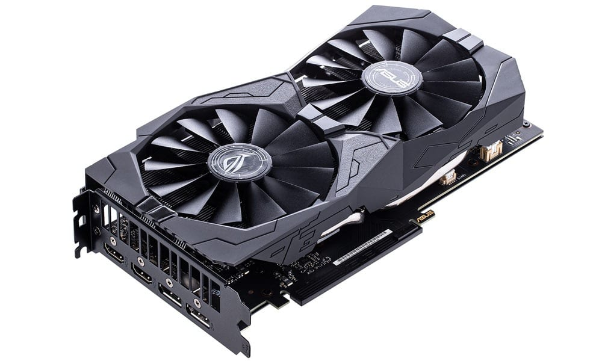
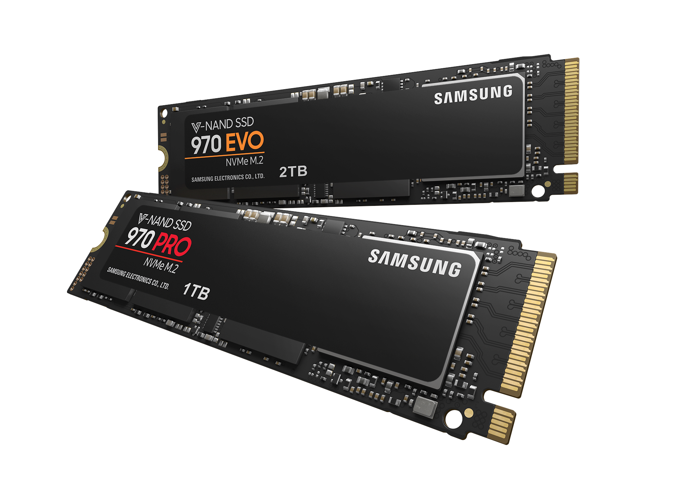

PS5 Disc Version
How it went & how it's going:
When the Playstation 5 Console was first released back on 19th November 2020 here in the United Kingdom, it went horribly wrong. Sony didn't anticipate how many consoles they were going to sell-the demand was much much higher than Sony thought it would be. This meant that many people, not only in the United Kingdom, but worldwide too, could not get their hands on the powerhouse of a console that they had been waiting on for too long. The console was getting a lot of hype on all social media platforms and by companies' reviews and comments. Many were dissapointed as when they went to buy one, they would either manage to add one to their basket and it would then inform them that the retailer has ran out of stock, or they were just too late to even get onto the site and been put into the queue with who knows how long it actually was because all of the queues say '1 hour+'!
After the initial release went completely the opposite direction to what everyone thought it would go, Sony made a promise. Sony put out a statement stating that they will have 18 million consoles shipping worldwide over the first 4 months of 2021. In January there were a lot of console drops at many retailers. However, there are many people still waiting to purchase a PS5. Many more people will probably haev one if it wasn't for scalpers and bots. A scalper is a person who resells shares/products (in this case the Playstation 5) at a large or quick profit, this is mainly a vrey large profit for PS5s. A bot is an automated program that runs over the internet and inputs data faster than a human can, this means that the bot is able to checkout with a PS5 probably before us humans have even been able to add it to our baskets. Companies are starting to recognise orders that have come from bots, with these orders, they cancel them and release them as stock again, GAME.co.uk has been quite good at doing that in their January drops. To avoid scalpers on the other hand, almost every retailer has put a limit of one console per customer/household. Meaning they won't be able to purchase multiple and take away the opportunity for others to secure themselves a Playstation 5. Due to the fact that there were more disc versions than digital edition PS5s, the secondary market price has increased, so much that it is almost at the same average price for a PS5 Disc Edition on the secondary market.
In the United Kingdom it has been leaked that 22nd February 2021 seems to be the day to get one as this is when many retailers could be getting more stock. This is not 100% as circumstances can always change but keep an eye out. This is mainly for: Argos, Currys PC World, GAME.co.uk, Smyths and Amazon.co.uk
Specifications:
CPU: 8x Zen 2 Cores at 3.5GHz (variable frequency)
GPU: 10.28 TFLOPs, 36 CUs at 2.23GHz (variable frequency)
GPU Architecture: Custom RDNA 2
Memory/Interface: 16GB GDDR6/256-bit
Memory Bandwidth: 448GB/s
Internal Storage: Custom 825GB SSD
IO Throughput: 5.5GB/s (Raw), Typical 8-9GB/s (Compressed)
Expandable Storage: NVMe SSD Slot
External Storage: USB HDD Support
Optical Drive: 4K UHD Blu-ray Drive
The biggest talking point about the Playstation 5 Console is the 10.28 teraflop GPU. Teraflops is the measure of how many calculations the GPU can perform per second-the higher, the better. However, the Playstation 5's competitor, the Xbox Series X, has a 12 teraflop GPU.
Rather than the normal slow 500GB or 1TB Hard Drives as internal storage, we now have a custom 825GB solid state drive, designed to offer extremly quick load times and to eliminate the long patch installs familiat to PS4 owners. If you find yourself running out of storage space and want/need more, you can buy an NVMe SSD and insert it into the designated slot on the motherboard. However, that means it will have to be taken apart so make sure you do sufficient research before-hand. Your other option is paying someone that knows what they are doing to do it for you.


Contact Us
01202 123456email@address.com123 Not Real LaneAB12 3CD